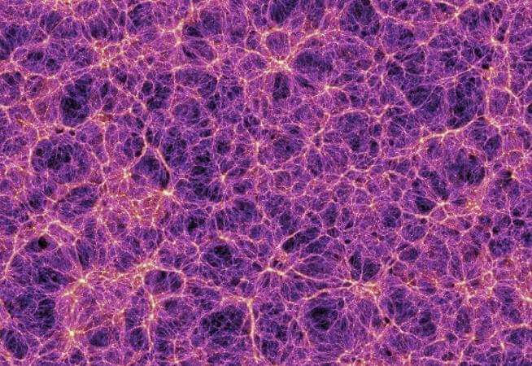
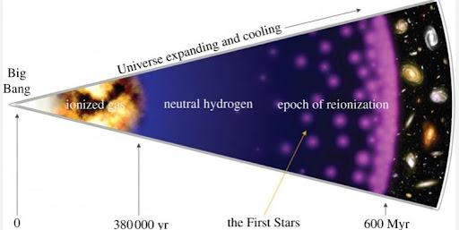
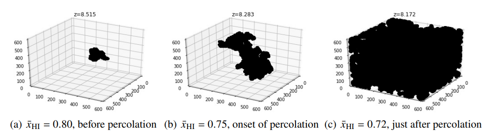
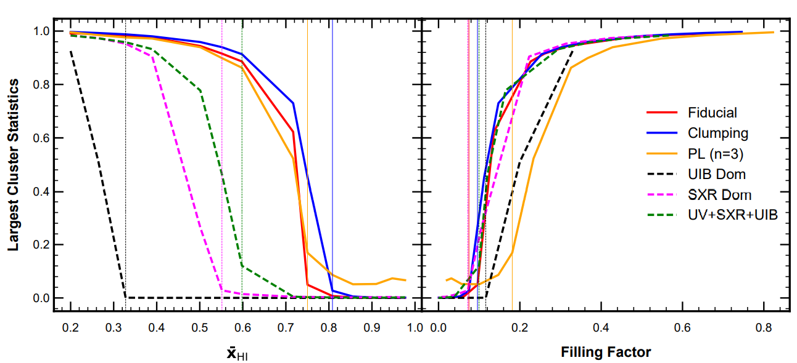
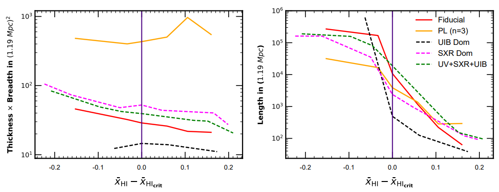
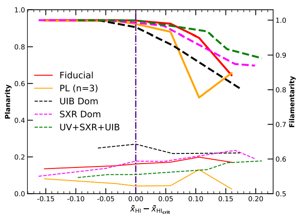

Exploring the topology of hydrogen distribution in the early universe
We study how galaxies and other sources in the early universe change the neutral universe or InterGalactic Medium (IGM) into the ionized one. We compare different kinds of source models and how they ionize the neutral universe which mainly consists of neutral hydrogen. We trace the largest ionized region formed by these sources by using a statistic known as the Largest Cluster Statistics (LCS). We found that LCS of different source models evolve differently and hence show different natures of ionizing photons or sources. We also investigate the geometry and topology of these ionized regions and how they are different for each model.
Introduction
The universe on a very large scale seems like a web which we astronomers refer to as the cosmic web. Entities like galaxies and clusters of galaxies are trapped within this giant web (see figure 1). The unknown but the most abundant matter, dark matter, plays a governing role in shaping these giants by capitalizing the full potential of the most dominant force on a cosmic scale, gravitational force. We put our efforts to understand the formation and evolution of the universe including these giants by looking at the driving physics behind these.

Figure 1: Image of the cosmic web. Figure shows the dark matter distribution (taken from the Millennium simulation). Here, every bright point represents a galaxy cluster. Image Credit: V.Springel, Max-Planck-Institut für Astrophysics.
The universe has undergone a significant transition on a regular basis since its birth. Figure 2 shows the evolution of our universe from the Big Bang on the left hand side to the current local universe which we see today on the right hand side of the plot. One of the major recent and remarkable phase transitions is the Epoch of Reionization (EoR), when the neutral Intergalactic Medium (IGM), mainly composed of neutral hydrogen, gets transformed into an ionized one. The galaxies residing within the dark matter halos (host of galaxies) act as one of the primary sources responsible for the reionization.

Figure 2: Pictorial representation of the evolution of our Universe according to the standard cosmological model. Image credit: astrobites
In order to understand this era, we use several techniques and approaches to recreate the environment. We use analytic models (refer to Wyithe and Loeb 2012), semi-analytic models (refer to Mutch et al 2016), semi-numerical models (refer to Majumdar et al. 2016 ), etc., to understand the EoR and to comply with what we observe from large surveys conducted using advanced telescopes that are increasingly more sensitive.
It is evident that different sources during EoR emit different kinds of ionizing photons, and hence, ionize the IGM in a different way. In our analysis, we investigate this era by focusing on the properties of some of these possible sources which can ionize the IGM. We consider six reionization source models based on the semi-numerical method originally proposed in Majumdar et al. 2016. These source models differ from each other in two main aspects: a) how the number of ionizing photons emitted by the sources are related to their host halo mass i.e. Nphotons ∝ (Mhalo)n and b) how the rest frame energy of the ionizing photons is distributed. The different source models considered in our work are mentioned in the table below. The Uniform Ionizing Background (UIB) dominated source model emits hard X-ray photons having large mean free path and hence creates a uniform ionizing background. The Soft X-Ray (SXR) dominated source model emits soft X-ray photons having limited mean free path. Source models like Fiducial (assumes 100% contribution of UV rays coming out from the galaxies residing inside the dark-matter halos) and Power Law (PL) (n=3) differ from each other in terms of the number of ionizing photons they emit following the relation shown in point (a) above.
| Reionization models | Ultraviolet photons (UV) | Uniform Ionizing Background (UIB) | Soft X-Ray photons (SXR) | Power Law (PL), (n) |
|---|---|---|---|---|
| Fiducial | 100 % | - | - | 1 |
| Clumping | 100 % and Non Uniform Recombination | - | - | 1 |
| UIB Dominated | 20 % | 80% | - | 1 |
| SXR Dominated | 20 % | - | 80% | 1 |
| UV + SXR + UIB | 50% | 10% | 40% | 1 |
| PL (n=3) | 100% | - | - | 3 |
Reionization scenario like clumping model shows an extreme reionization case considering the clumpiness of the density field and emits ultraviolet (UV) photons. On the other hand, UV + SXR + UIB source model shows a combined contribution of UV photons, hard X-ray photons and soft X-ray photons.
We investigate how the ionized regions formed by these sources evolve with redshift and what geometrical or topological information we can grab from their evolution by looking at their shape and size. One can use Minkowski functionals (a set of four functionals which gives information about the geometrical and topological distribution of matter in the universe) (for example, Bag et al. 2018, Mecke et al. 1994) to define the morphology of an object. In our work, we specifically use this to define the shape and size of our object (ionized region in our case). We use an algorithm called SURFGEN2 which identifies ionized regions from the density field and informs about their shape and size in the form of three Shapefinders (namely, thickness, breadth and length).
If we look at these ionized regions, with time, different reionization source models forming these ionized regions grow in size as well as in numbers, which then start to overlap. At some point in time, they coalesce together and form a single large connected ionized region as one can notice from the middle and right panels in the figure 3. This transition phase is known as the percolation transition (one can look at the articles Klypin and Shandarin 1993, Capp Yess and Shandarin 1996). In our analysis, out of many ionized regions, we primarily focus on the largest ionized region and its evolution around the percolation. We use the Largest Cluster Statistics (LCS) which is defined as the ratio of the volume of the largest ionized region to that volume of all ionized regions in a simulation volume to trace the largest ionized region.
LCS = Volume of Largest Ionized Region / Volume of all ionized region
Before percolation we have a very small largest ionized region but as we reach percolation and after percolation, the ionized region increases drastically, and at the end of reionization, almost the entire simulation box is filled with the largest ionized region as evident from the figure 3 as we go from left to right.

Figure 3: Figure shows the transition of the largest ionized region from smaller size before percolation to the size of the entire simulation box after percolation. Middle panel shows the onset of percolation.
As the reionization progresses, the neutral hydrogen present in the IGM ionizes and eventually the entire IGM converts into an ionized one at the end of the reionization. The neutral fraction (xHI) informs about the amount of neutral hydrogen present in a volume with respect to the entire hydrogen species including both neutral and ionized one at any time. In our analysis, we use this quantity to see the evolution of LCS and shapefinders which we discussed.
Results
Evolution of Largest Cluster Statistics
The largest ionized region evolves differently for different reionization source models. The point of percolation is also different for different models. The inside-out scenarios where the reionization starts from the denser part of the IGM and then proceeds to the less dense part, the percolation occurs at much higher neutral fraction as compared to its counterpart, the outside-in scenario, where reionization starts from less dense regions and then the high-dense region is covered.
Figure 4 shows the variation of Largest Cluster Statistics (LCS) with the neutral fraction and Filling Factor (FF) for different reionization models. Here, Filling Factor is defined as the ratio of volume of all ionized regions to volume of our simulation box. One can notice from the left panel that the largest ionized region or LCS before percolation (shown by vertical lines) is significantly small for all reionization models but at the onset of percolation and after percolation, an abrupt increment in LCS can be observed. This result is quite obvious because as the reionization progresses, different ionized regions grow and interconnect with each other and hence form a single interconnected ionized region which is true for all reionization models as one can notice from the figure. Hence, before percolation, when we have a very small largest ionized region, it is indistinguishable from other ionized regions but as we reach percolation, they interconnect and become quite distinguishable. It depicts how the neutral IGM slowly transformed into an ionized one when the ionized bubbles got enough time to develop. However, percolation for different models occurs at different neutral fractions. The inside-out reionization models percolate at higher neutral fraction (shown by solid lines) whereas the outside-in reionization models percolate at lower neutral fraction. At the end of reionization, we can observe a single large ionized region occupying the entire simulation volume as is evident from the right panel of figure 4, where LCS is close to unity.

Figure 4: The percolation transition has been compared for all six reionization models in terms of LCS. The left panel shows the LCS as a function of neutral fraction (xHI) whereas the right panel illustrates how LCS evolves with FF for the different reionization scenarios. In both panels, the vertical lines represent the percolation transitions in the reionization models with corresponding colors.
Hence, we can say that following the LCS along with the percolation, we can distinguish between the two broad categories of reionization models i.e, inside-out and outside-in reionization models.
Shape of Largest Ionized Region
The ionized bubbles formed by different sources, in principle, can be of complicated shape or geometry as they grow. For ease of understanding, one can use a simple geometrical or topological approach for the same. The Shapefinder technique uses Minkowski functionals to unveil the shape and size of the ionized region. The four Minkowski functions for a closed 2-D surface are:
- Volume enclosed, V: Informs about the enclosed volume within the surface of an object or ionized region.
- Surface area, S: Informs about the surface area of the object.
- Integrated Mean Curvature (C): Informs about the concavity or convexity of the surface or in other words principal curvature (or radius of curvature) of the surface.
- Gaussian Mean Curvature (Euler Characteristics): Informs about the topological properties of an object.
The Shapefinders are expressed as the ratio of these Minkowski functionals to assess the shape of an object. In 3-D, the three shapefinders are :
- Thickness: T = 3V/S
- Breadth: B = S/C
- Length: L = C/4π
These three are the good measures of the extension of an object in 3-dimension. We can further use these shapefinders to determine the morphology of an object by means of these two dimensionless quantities:
- Planarity: P = (B-T) / (B+T)
- Filamentarity: F = (L-B) / (L+B)
We employ these aforementioned techniques to see how the geometry or topology of the largest ionized region evolves with the redshift. An ionized region can be expressed in terms of its length, breadth and thickness, which are the three Shapefinders mentioned earlier. We show the variation of cross-section and length with the neutral fraction in figure 5. We can observe that the cross-section of the largest ionized region for all reionization scenarios in the left panel remains almost constant with the variation in neutral fraction. Whereas, in the right panel, its length increases several orders of magnitude as the reionization progresses. Hence, one can robustly confirm the fact that as the reionization progresses, the topology of the largest ionized region becomes filamentary, as one can notice in figure 6 where the filamentarity (shown by thick line curves) has a larger value than the planarity (thin line curves) for all reionization scenarios.

Figure 5: This figure illustrates the evolution of the shape of the largest ionized region (LIR) for the five reionization scenarios (excluding the clumping model since this is the only scenario where extreme reionization is considered and hence it’s shapefinders behave differently) near the respective percolation transitions. The left and right panels show the variation of cross-section (estimated by T x B) and the length (L) of the LIR on the y-axis against the neutral fractions on the x-axis.

Figure 6: Planarity and filamentarity of the largest ionized region in different models have been compared near the respective percolation transitions. The solid and dashed curves represent the reionization models following inside-out and outside-in reionizations respectively. The thick line curves (solid and dashed) represent the filamentarity and thin line curves represent the planarity of the largest ionized region in different models.
We also observe that as the reionization progresses, the largest ionized regions in all the scenarios become more multi-connected as their genus (in simple words, for any surface, it represents the number of holes present in the surface and hence informs about the multi-connected regions) increases. Thus, from our findings, we can conclude that at the later stage of reionization, we observe multi-connected filamentary structures for all reionization models. We found that the reionization model, like the clumping model, which follows extreme reionization, can be distinguished or separated quite easily by the Shapefinder technique. We crudely estimate the uncertainties by dividing each original simulation volume into eight smaller sub-volumes followed by estimating the variance of various quantities from these sub-volumes. Our research group at IIT Indore is currently working on noise which we get from the observations and the impact of primary beams on LCS analysis of the 21-cm signal considering the upcoming low-frequency Square Kilometer Array (SKA1-low) observations using a realistic simulations for such observations.
Conclusion
-
We consider the evolution of the largest ionized region by using a statistic called LCS in order to distinguish between the different reionization models.
-
We found that LCS for all reionization models before percolation is quite small and hence indistinguishable, but it increases abruptly at the onset of percolation. However, different reionization models percolate at different neutral fractions. Hence, following the evolution of LCS along with the percolation can help to distinguish between different models, and especially the inside-out or out-side- in models.
-
We also find that the cross-section of the largest ionized region in all the scenarios (except for the clumping model) remains stable at the percolation transition when the largest ionized region abruptly grows, mostly in terms of its third Shapefinder – ‘length.’ The genus of the largest ionized region also increases as reionization progresses. Hence, multi-connected filamentary structure is observed at a later stage of EoR.
Original paper: Distinguishing reionization models using the largest cluster statistics of the 21-cm maps
First Author: Aadarsh Pathak
Co-authors: Satadru Bag, Saswata Dasgupta, Suman Majumdar, Rajesh Mondal, Prakash Sarkar
First author’s Institution: Department of Astronomy, Astrophysics & Space Engineering, Indian Institute of Technology Indore, Indore, India
Related articles
- Gravitational Waves in an Inhomogeneous Universe
- SARAS 3 telescope refutes astrophysical origins of the claimed cosmic dawn signal
- Mass of the Black Hole in the nearby AGN: Mrk 590
- Shedding Light on the Cosmic Web with Fast Radio Bursts